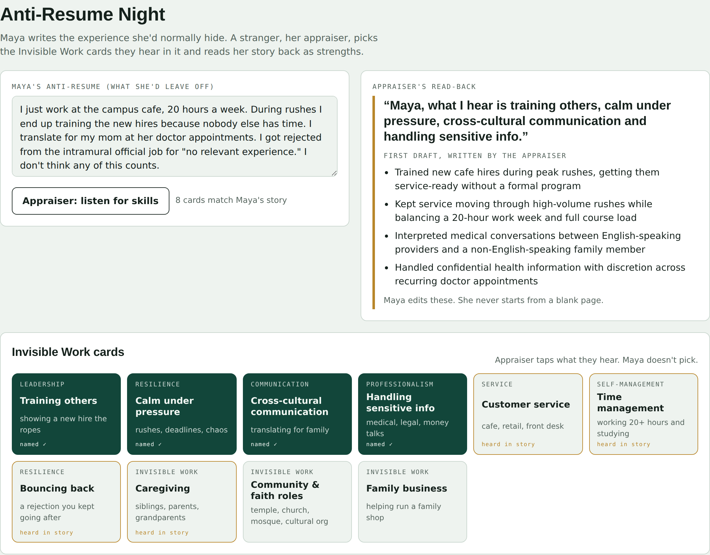

Step 1 · Appraise
Anti-Resume Night
- What you do
- Maya types the experience she'd normally hide. The appraiser taps "Listen for skills," and cards the story points to light up gold.
- What happens
- Each tapped card writes a line of the read-back ("Maya, what I hear is…") and a drafted resume bullet. Maya never picks her own cards.
- Pain point it answers
- "I'm very unsure about myself" · "Other people see my strengths better than I do"